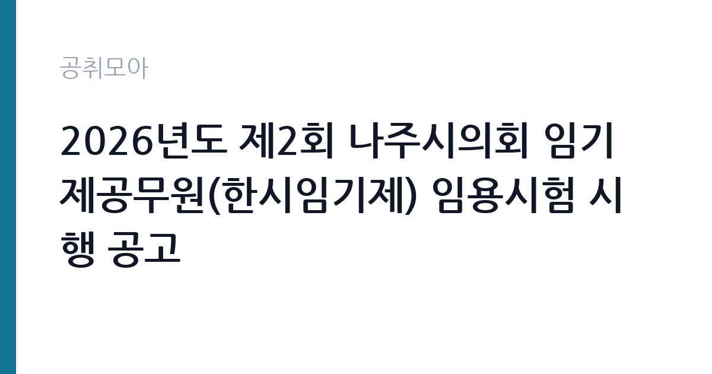

[지자체] 2026년도 제2회 나주시의회 임기제공무원(한시임기제) 임용시험 시행 공고
전남광주통합특별시 나주시 의회사무국 · 전남 · 마감 2026-10-08 (D-16) · 출처 나라일터

한눈에 보는 모집 조건
| 기관 | 전남광주통합특별시 나주시 의회사무국 |
|---|---|
| 공고명 | 2026년도 제2회 나주시의회 임기제공무원(한시임기제) 임용시험 시행 공고 |
| 고용형태 | 임기제 |
| 근무지 | 전남 |
| 게시일 | 2026-09-22 |
| 마감일 | 2026-10-08 (D-16) |
지원자격, 이렇게 읽으세요
- 한시임기제 제7호 1명
- 접수 ~2026-10-08 마감
- 세부 조건은 원문 공고문 확인
채용 분야는 의사 진행지원으로 한시임기제 7호에 해당하며, 세부 자격요건은 붙임 공고문에서 확인하셔야 합니다. 의회 운영과 의사 지원 관련 경력이나 행정 실무 경험이 핵심이 될 가능성이 큽니다. 지방공무원 임용이므로 결격사유 등의 조건도 함께 살펴보시기 바랍니다. 접수 기간이 3일에 불과하므로 증빙서류를 미리 준비하시기 바랍니다.
이 공고의 포인트
첫 번째 포인트는 의사 진행지원이라는 특화 직무라는 점입니다. 의회 회의 운영을 직접 지원하는 자리로, 지방자치 실무를 깊이 있게 배울 수 있습니다. 두 번째로 한시임기제 7호의 직급이 명확해 본인의 경력과의 적합성을 판단하기 쉽습니다. 세 번째로 접수 기간 3일이라 준비된 지원자에게 유리한 구조입니다. 나주 지역 정치·행정에 관심 있는 분께 적합합니다.
전형은 어떻게 진행되나
전형은 서류전형과 면접시험으로 진행되는 임기제 임용시험입니다. 접수 기간은 10월 6일부터 10월 8일 18시까지 3일간이며, 방문접수와 등기우편 접수가 가능합니다. 등기우편은 마감 시각 도착 기준일 수 있으니 원문에서 반드시 확인하시기 바랍니다.
원문에서 확인한 전형 방식
2026년도 제2회 나주시의회 임기제공무원(한시임기제/의사 진행지원) 채용 계획을 붙임과 같이 공고합니다. 1. 채용분야: 의사 진행지원 2. 채용인원 및 직급 - 의사 진행지원: 1명(한시임기제 제7호) 3. 접수기간: 2026. 10. 6.(화) ~ 10. 8.(목) 18시까지 / 3일간 4. 접수방법: 방문접수 또는 우편접수(등기) 붙임 1. 2026년도 제2회 나주시의회 임기제공무원(한시임기제/의사 진행지원) 채용 공고문 1부. 2. 응시자 제출서류 1부. 끝.
이런 분께 추천해요
- 지방의회 운영과 의사 지원 업무에 관심 있으신 분
- 나주 지역에서 임기제 근무가 가능하신 분
- 행정 실무 경험으로 의회를 지원하고 싶으신 분
지원 전 체크리스트
- 의사 진행지원 분야의 자격요건을 붙임 공고문에서 확인했습니다
- 접수 기간 3일(10월 6일~8일 18시)에 맞춰 서류를 준비했습니다
- 방문·등기우편 접수처를 확인했습니다
- 한시임기제의 근무 조건을 원문에서 확인했습니다
모집 일정과 제출 타이밍
접수 기간은 2026년 10월 6일부터 10월 8일 18시까지 3일간입니다. 추석 연휴 이후이므로 연휴 기간에 서류를 완성해 두시기 바랍니다. 서류전형 합격자 발표와 면접 일정은 시의회 안내에 따르시기 바랍니다.
직무 이해하기: 지자체
의사 진행지원은 본회의와 상임위원회의 의사진행을 돕는 직무로, 회의 자료 준비와 의사일정 관리, 회의록 지원 등의 업무를 맡습니다. 나주시의회사무국 소속으로 전남 나주에서 근무합니다. 지자체 카테고리 공고입니다. 의사 지원 업무는 회의 소집 통지와 안건 정리, 회의 자료 배부, 속기와 회의록 작성 지원, 방청과 취재 대응 등을 포함합니다. 회기 중에는 업무가 집중되므로 일정 관리가 중요합니다.
자기소개서 작성 팁
응시서류에서는 행정 실무와 회의 지원 경험을 구체적으로 기술하시기 바랍니다. 문서 작성과 일정 관리, 의전 지원 경험을 사례와 함께 제시하면 좋습니다. 지방의회 운영에 대한 이해와 관심을 진정성 있게 서술하시기 바랍니다.
면접 준비 포인트
면접에서는 의회 운영의 기본 구조와 의사 지원 실무를 질문받을 가능성이 큽니다. 지방자치법의 의회 관련 규정을 미리 정리해 두시기 바랍니다. 정치적 중립성과 공정한 지원 태도를 명확히 밝히시기 바랍니다.
급여·근무조건 읽는 법
보수 수준은 원문 공고문에서 확인하셔야 합니다. 한시임기제 7호의 봉급은 지방공무원보수규정에 따른 연봉제가 적용되며, 경력을 고려해 책정됩니다. 정확한 금액과 수당 구성은 원문의 보수 조건에서 확인하시기 바랍니다.
자주 묻는 질문
- 의사 진행지원은 어떤 일을 합니까
본회의와 위원회의 의사진행을 돕는 직무로, 회의 자료 준비와 의사일정 관리, 회의록 작성 지원 등을 맡습니다. - 접수 기간이 언제입니까
10월 6일부터 10월 8일 18시까지 3일간이며, 방문접수와 등기우편 접수가 가능합니다. - 한시임기제의 신분이 어떻습니까
기간을 정해 임용되는 공무원으로, 해당 사유가 해소되면 임용이 종료됩니다. 근무 기간 조건은 원문에서 확인하시기 바랍니다.
함께 보면 좋은 공고
[지자체] 2026년도 제2회 포항시의회 임기제공무원 임용시험 시행계획 공고 — 마감 2026-10-08[지자체] 2026년 대전광역시 서구보건소 일반의사(기간제근로자) 채용 공고 — 마감 2026-10-01[지자체] 서울특별시 강북구 시간선택제임기제공무원(정책기획) 경력경쟁임용시험 공고 — 마감 2026-10-08출처: 나라일터 공개정보를 바탕으로 공취모아가 정리한 안내글입니다. 모집 조건·일정은 변경될 수 있으니 지원 전 반드시 원문 공고문을 확인하세요. 본 글은 정보 제공용이며 합격을 보장하지 않습니다.